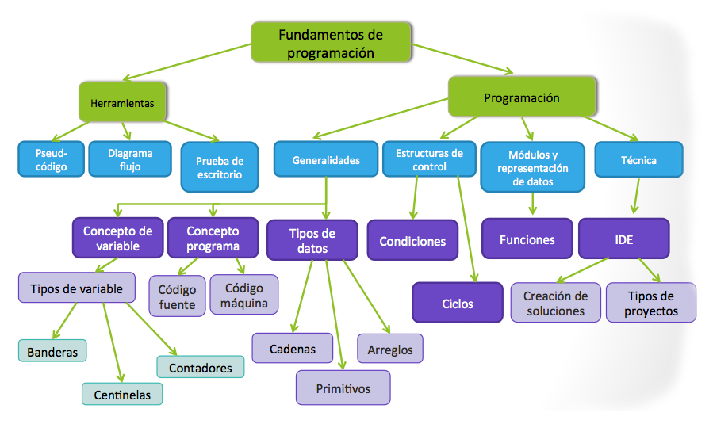
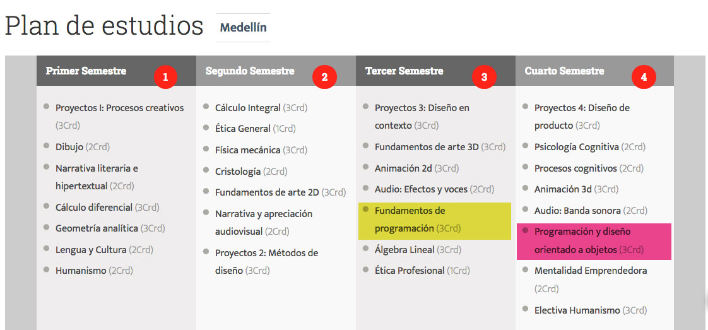

Fundamentos de programación
Profesor: Andrés Bedoya Tobón
email: andres.bedoya@upb.edu.co
“No hay mejor profesor que el error, ni más dulzura que el que sufre y luego cura su dolor” --Nach
Presentación
El diseño de software, la solución de algoritmos y la escritura del código de una aplicación. Son habilidades que debe desarrollar el estudiante, de tal forma que le facilite la participación en equipos de trabajo interdisciplinar para realizar videojuegos, experiencias interactivas y demás productos relacionados con el entretenimiento.
Los fundamentos de programación ofrecen los principios básicos para crear un programa que permita ordenarle a un dispositivo una serie de tareas que debe realizar.
Esquema gráfico del curso
Ubicación del curso dentro del programa
Competencia general del curso
Competencias en el saber/conocimientos
Parciales escritos, exposiciones y proyecto en equipo.
Competencias en el hacer/habilidades, destrezas
- Análisis: Uso de diferentes metodologías para interpretar, entender y visualizar un problema.
- Planeación: Planea y estima el proceso de creación de un programa
- Coherencia: Uso correcto de las herramientas y de la metodología para crear la solución de un programa.
- Creatividad: Resuelve problemas usando recursos innovadores
- Investigación: Investiga temas relacionados con la programación y complementa su formación en clase.
Competencias en el ser/actitudes
Responsabilidad en las entregas, puntualidad en la asistencia a las clases, trato respetuoso con sus compañeros y docente, trabajo en equipo.
Metodología del curso
Clase magistral: La clase tiene bastantes fundamentos teóricos que se deben ir impartiendo a medida que se avanzan en los temas, por tanto se dedica gran porcentaje del curso a explicar teoría por medio de exposición apoyado en una presentación o en el tablero por medio de ejercicios puntuales.
Proyecto de semestre: Se realizará un juego de plataforma, realizando entregas semanales, teniendo en cuenta como guía 16 videos publicados en youtube, la planeación del estudiante y para hacer seguimiento y evaluación del esfuerzo se usara como metodología SCRUM.
Exámenes: Se realizan exámenes parciales escritos, donde se realizan preguntas teóricas y se evalúa la forma de resolver problemas de lógica y programación.
Asistencia: El curso se cancela por inasistencia al 20%.
Reglas de clase
- El proyecto de clase se entregan en un repositorio
- Se realizarán publicaciones en el foro holamundo.co cada día de clase, para llevar la evolución del proyecto.
- Se permite el uso de código encontrado en internet, pero se debe estar en la capacidad de sustentar
- La calificación del trabajo en el proyecto grupal es individual, según los criterios de evalución
Reglas de clase
- Si por alguna razón llega tarde, recuerde avisar durante la clase, para quitar la falta
- Para presentar trabajos o exámenes luego de incapacidad o situación que amerite una excusa, se debe validar en secretaria, coordinador de la carrera o con el director de la facultad (depende de la situación) y luego entregar el formato de autorización al docente
- La mayoría de contenido esta publicado en línea, sin embargo se recomienda tomar nota en clase, ya que siempre hay información extra que no aparece en el material de apoyo.
Reglas de clase
- No se deben usar celulares durante los exámenes y se debe evitar su uso durante las clases
- Los exámenes se presentan de forma individual y escrita, solo se permite sacar lápiz, borrador, folleto oficial del curso, y hoja carta impresa, con el resumen de todo lo necesario para el examen.
- La hoja para el examen, es personal, si hay dos estudiantes con la misma hoja, no se podrá usar el recurso durante el examen.
Evaluación del curso
| Actividad | Porcentaje | Fecha |
| Cocinando | 5% | Enero 28 |
| Cantando | 5% | Febrero 6 |
| Parcial 1 | 10% | Marzo 12 |
| Preentrega proyecto | 20% | Marzo 26 |
| Parcial 2 | 20% | Abril 23 |
| Parcial 3 | 10% | Mayo 5 |
| Entrega final proyecto | 30% | Mayo 7 |